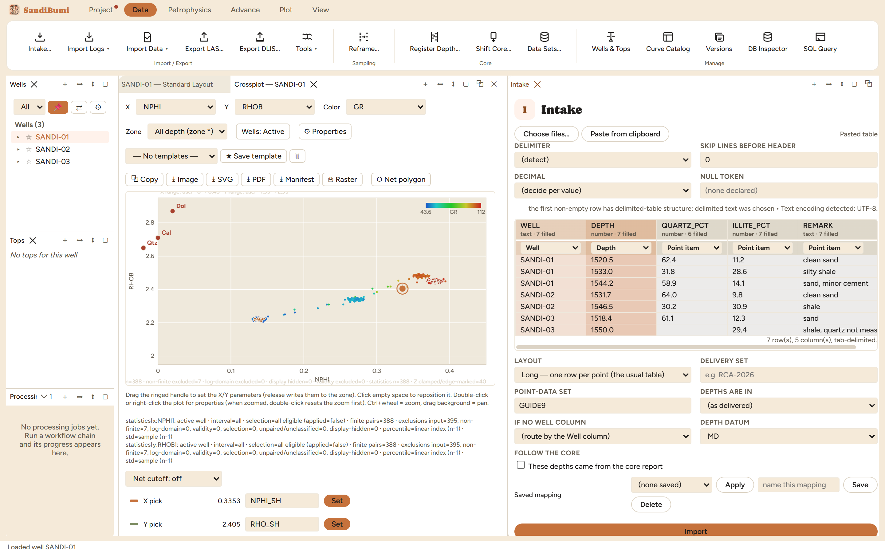

Intake is the one door for any delimited table: core plugs, XRD, CEC, oil
shows, perforations, an array delivery, or a column of extra log values. Real
deliveries arrive as whatever a lab's spreadsheet exported, so the pane is
built probe-first: it reads the file (or the clipboard), shows every guess it
made, and imports nothing until you have seen the mapping. The exemplar
formats are a starting point, not a spec; any delimited text with mixed
column types is fair game.
The pane

A pasted tab-delimited table, probed: WELL and DEPTH were
recognised by name, the three value columns default to Point item, and
QUARTZ_PCT's sniff reads "number · 6 filled" because one cell is
blank.
Every reading option is a guess you can overrule: delimiter,
header skip, decimal convention, null token. Each change re-reads the
grid, so the effect is seen rather than deduced. The probe states its
reasoning in its own words, e.g. "the first non-empty row has
delimited-table structure; delimited text was chosen · Text encoding
detected: UTF-8."
Layout is declared, never sniffed: Long (one row per point),
Wide (one row per sample, the header row is the axis), or Block (several
tables stacked, the header repeated).
Roles per column: Well, Depth, Depth base, Porosity,
Permeability, Grain density, Saturation, Point item, Log curve, or
Ignore. Rows route to wells by the Well column (exactly-one-match rule);
a file with no well column is assigned to a well you pick.
Depth is handled explicitly: unit (as delivered / metres /
feet), datum (MD, TVD, TVDSS, TVDKB, TWT, OWT, CDEPTH), and the
"These depths came from the core report" tick that makes the delivery
follow the core when the core is later shifted.
Saved mappings replay a delivery shape: name the mapping once
and Apply it to next quarter's file.
Step by step
Open Data ▸ Intake…, then Choose files… or
Paste from clipboard. The probe grid appears immediately
("7 row(s), 5 column(s), tab-delimited." on the example).
Check every role select against the header; fix what the guess got
wrong. Name the point-data set (GUIDE9 here) so the delivery is
identifiable later.
Press Import. The verdict is counted, not summarised: the
example table of 7 data rows across 3 wells lands as "7 row(s) into 3
well(s), 20 point-data row(s) carried".
Reading the result
The counts reconcile exactly. Seven rows times three value columns is 21
candidate values; 20 were carried because one quartz cell was blank, and a
blank cell is skipped, never read as zero. The delivery appears in
Data ▸ Data Sets… under its own name with the source file recorded,
and a set name already used on a well auto-suffixes rather than overwriting:
an import never eats an earlier delivery.
QC and pitfalls
Read the sniff line, not just the grid. "number · 6 filled" on a
7-row column is the pane telling you a value is missing; decide whether
that is a lab gap or a parsing problem before importing.
Percent and unit conversions are not applied to extras. Value
columns are stored verbatim; if a column is percent and downstream work
expects fractions, that conversion is a decision to make where the value
is used, on the record.
The depth datum is part of the data. A table quietly delivered
in TVD imported as MD puts every value on the wrong rock; the datum
select exists so the statement is made once, at the door.